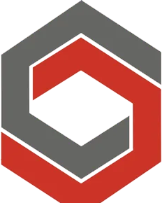

Transformando la tramitología
Sabé exactamente qué papeles te van a pedir. Antes de que te los pidan.

Primer lugar Buildathon · Semana de la Construcción 2026¿Cuántas veces te devolvieron el mismo expediente?
El requisito publicado y el requisito real no siempre son el mismo papel. Hoy lo que decide si pasás a la primera es a quién conocés, no qué tan bien hiciste tu trabajo.
-
Reprocesos
Volvés a la ventanilla por un documento que nadie te dijo que faltaba, o por una vigencia que se venció mientras esperabas.
-
Incertidumbre
Arrancás sin saber cuánto papeleo te espera de verdad, y el tiempo del proyecto se presupuesta a ojo.
-
La experiencia se va
Termina la obra, se va quien la tramitó, y el siguiente equipo tropieza exactamente con la misma piedra.
Certeza desde el primer día de la obra.
Nos contás cómo es el proyecto. Te decimos qué te van a pedir, quién lo pide y en qué orden conviene sacarlo.
-
Tu lista, no una lista
De todo lo que se puede pedir, calculamos lo que aplica a tu obra. Nada de listas genéricas que no dicen si te toca o no.
-
Donde de verdad se construye
Cada municipalidad pide lo suyo, con sus formatos y sus vigencias. Cambiás el municipio y la lista se recalcula sola.
-
Los plazos, a la vista
Certificaciones que caducan y pagos con fecha límite dejan de ser sorpresa: te avisamos antes, no después.
La misma obra, en dos municipios vecinos.
450 m², veinte metros de alto, pozo propio, dentro de un condominio. Lo único que cambia es dónde se construye.
Ciudad de Guatemala
- Certificación del Registro con seis meses de vigencia
- Planos en CAD versión 2007
- Clasifica la obra por metros cuadrados
Santa Catarina Pinula
- Certificación del Registro con tres meses de vigencia
- Planos en DWG
- Y una carta firmada por la asociación de vecinos
requisitos municipales en común. Ni los formatos, ni las vigencias, ni la forma de clasificar la obra. Por eso la experiencia de un municipio no te sirve en el de al lado.
Sumar, no duplicar.
La Ventanilla Ágil de la Construcción ya unificó a los ministerios en un solo formulario: eso está resuelto y nadie tiene que rehacerlo. Nuestro plan es integrarnos con ella y hacernos cargo de lo que todavía queda fuera — la parte municipal, que es donde cambia todo.
-
Lo ministerial, ya resuelto
Un solo trámite concentra a las instituciones de gobierno central. Trabajamos sobre eso, no contra eso.
-
Lo municipal, lo nuestro
Cada municipio tiene su normativa y su criterio. Ahí ponemos el trabajo, municipio por municipio.
No es una idea. Ya funciona.
Cada regla nace de un instructivo o de una guía oficial y guarda de dónde salió. Lo que todavía no está confirmado se muestra marcado: preferimos decirte que dudamos, a decirte algo que no es.
Detrás de esto hay tres personas.
Cimiento nace de la necesidad de impulsar a toda la industria de la construcción: derribar la barrera de una tramitología que cansa y devolverle productividad a quien construye. Leemos los datos y unificamos la experiencia en un solo lugar.
Somos Luis, Sebas y Diego. Nos metimos en el trámite real, convertimos normativa dispersa en algo que funciona, y le dimos forma.
¿Tramitás licencias de construcción, o querés construir esto con nosotros?
Sumarme al proyecto